Primera propuesta
Aquí lo principal es comparar las áreas prioritarias de investigación de los profesores que te interesan, para identificar las mejores opciones según las áreas que a ti te gustan.
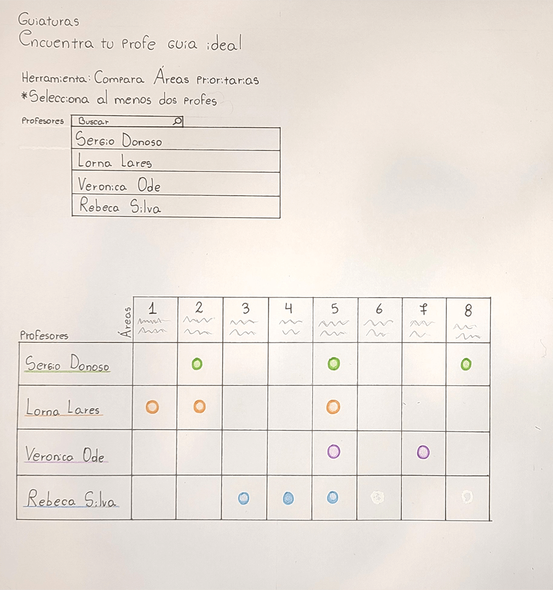 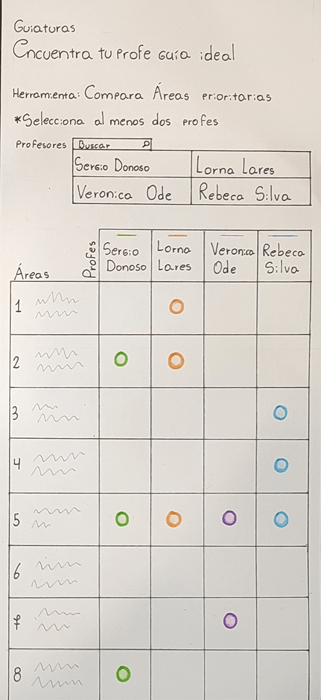Las siguientes son propuestas de visualizaciones de datos que me permitirían encontrar a quien me guíe en Proyecto de Título. Me basé en datos reales, disponibles por aquí, allá y más allá.
Aquí lo principal es comparar las áreas prioritarias de investigación de los profesores que te interesan, para identificar las mejores opciones según las áreas que a ti te gustan.
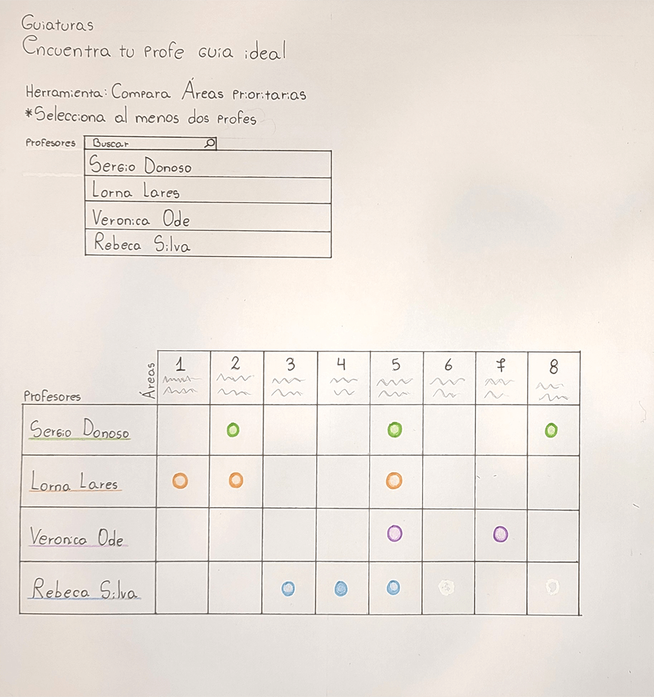 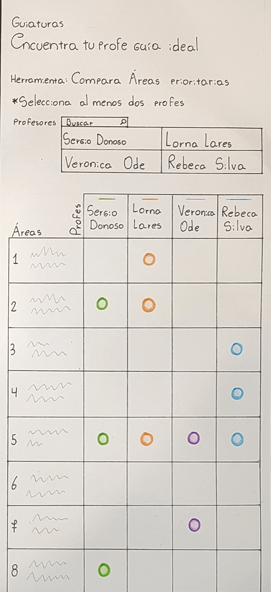Aquí lo principal es visualizar mediante una nube de palabras los conceptos clave que se trabajan en los proyectos que guía cada profesor, para así establecer si resulta afín con los conceptos que se relacionan a mi tema de investigación.
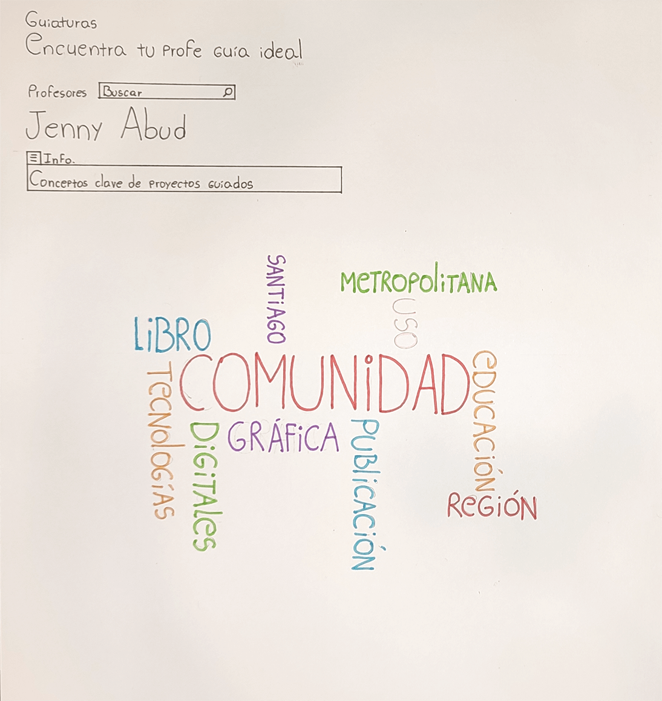 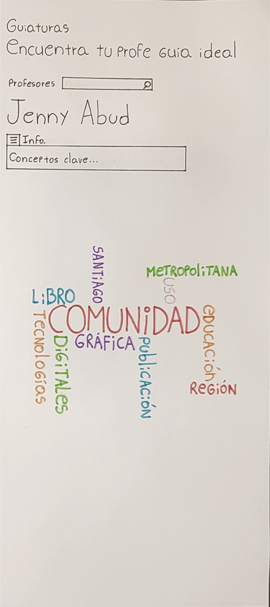Aquí lo principal es comparar las líneas de investigación que abarcan los profesores que me interesan, para poder identificar cuál me conviene más.
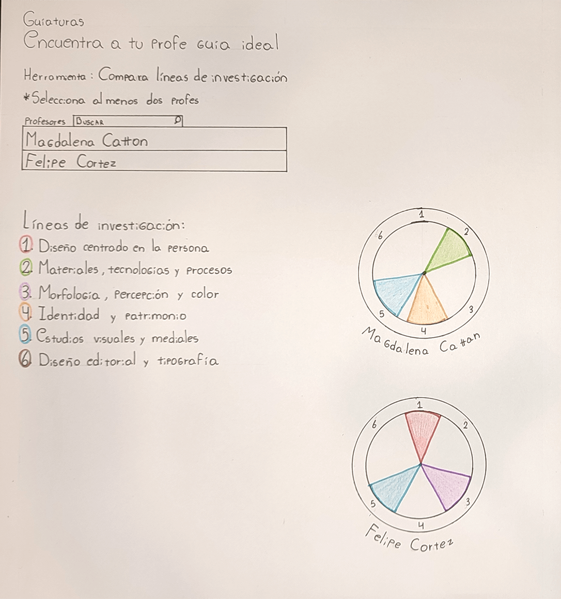 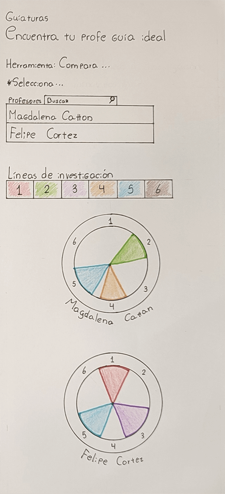Aquí lo principal es conocer el caso específico con cada profesor respecto al numero de inscritos y de aprobados durante título 2, para saber quienes tienen mejores resultados como guía.
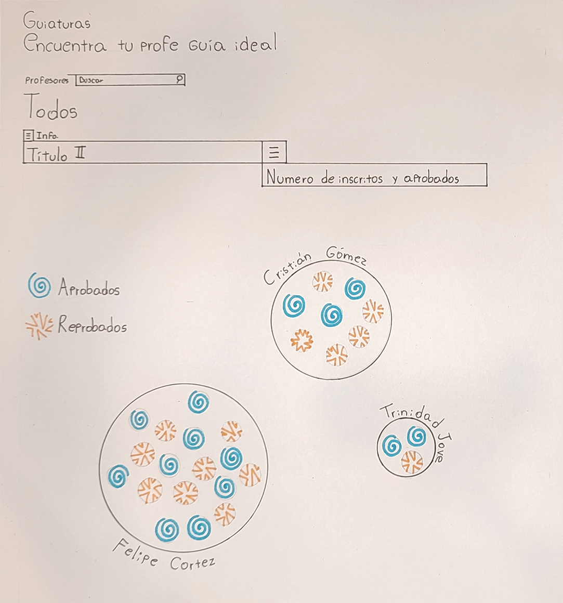 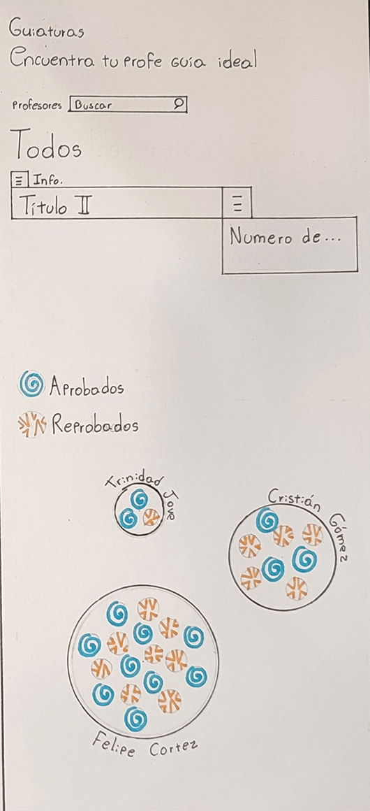Aquí lo principal es encontrar coincidencias con profesores que esten tanto en mi área, línea y enfasís de mi interés
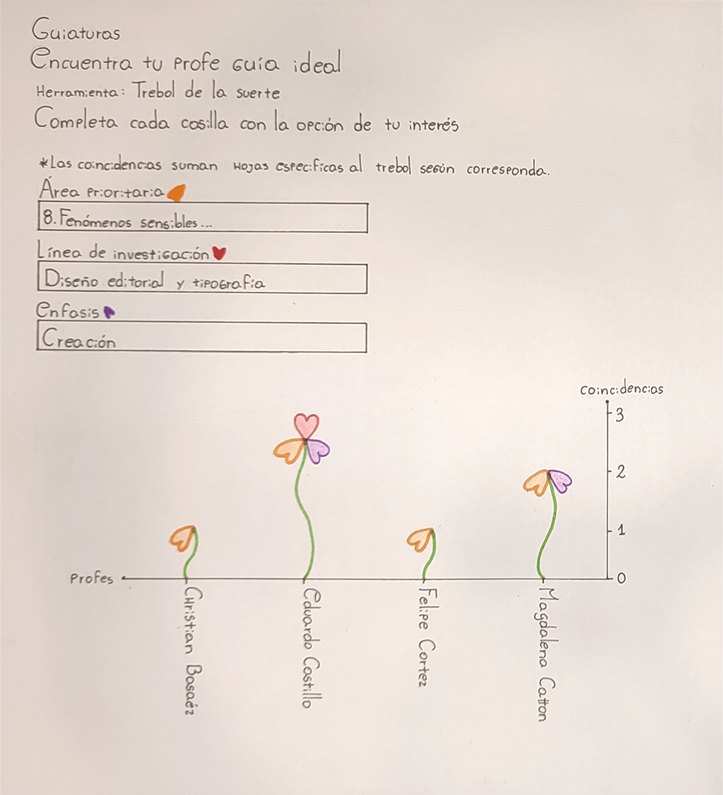 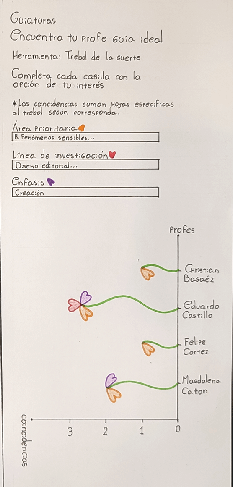Aquí lo principal es conocer las calificaciones de los proyectos que ha guiado algún profesor en específico, con el fin de conocer su historial de proyectos y su cualidad cómo guía.
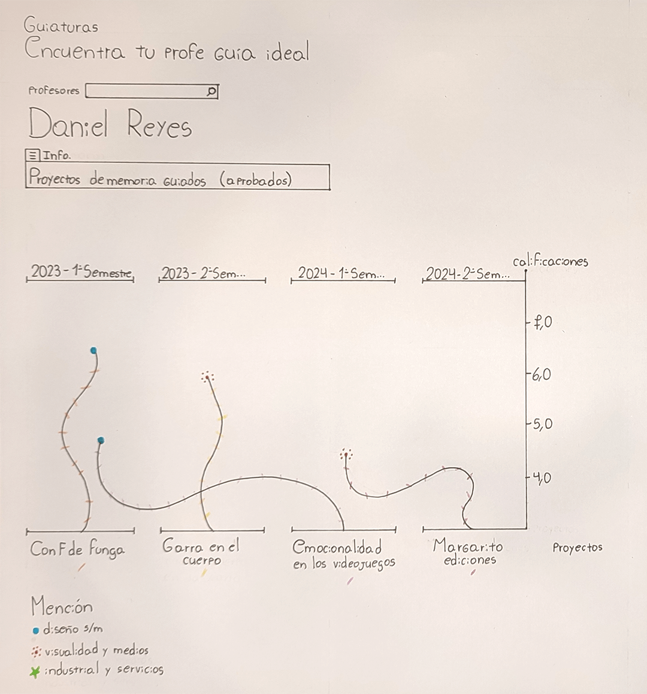 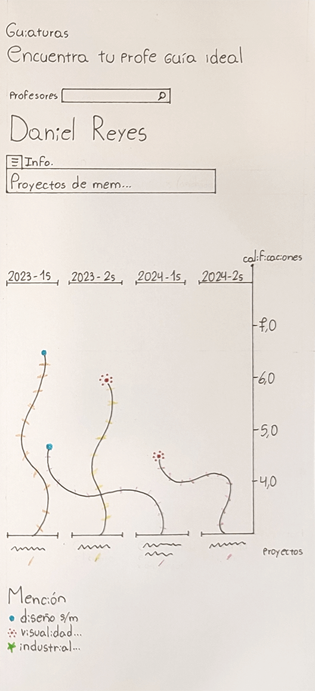